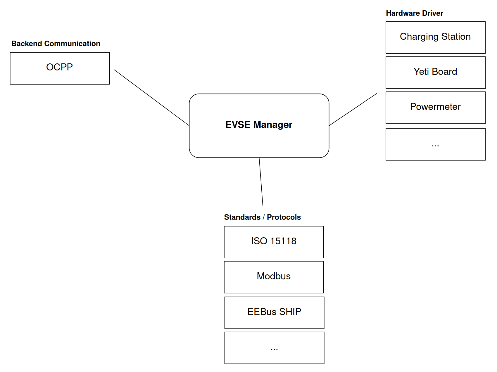

1. EVerest framework¶
You can think of EVerest as an operating system for EV chargers with implementations of communication protocols, software modules for representations of hardware devices (chargers, cars, …) and tools for simulating the charging process.
It’s a full stack environment for EV charging.
1.1. A Visual Introduction¶
A first very high level overview of the framework can be seen here:
The EVerest framework helps with building your dedicated development scenario with all needed modules for your specific developer’s use case. The modules are connected by using the principle of loose coupling.
Modules in EVerest can be everything like hardware drivers, protocols, authentication logic and more. Build up your development scenario as needed and enhance it by adding your own additional modules.
Another way to look at EVerest is its layer architecture:

Depending on your project use case, you can define the suitable module stack and configure module connections and module parameters.
What modules EVerest already delivers as ready-to-use implementations and which features they currently ship will be explained in detail in the modules documentation.
1.2. Tools And Helpers¶
Additionally, you have some tools and helpers that work with the framework which makes your EVerest developer’s life easier:

To understand the benefit delivered by those tools, let’s have a sneak preview:
Admin Panel: Tool to show all modules connections and dependencies including the parameters set for the modules.
EVerest Dependency Manager (edm): Tool that helps you getting all needed repositories from Git for your specific setup.
ev-cli: Generates module and interface scaffolds based on templates. This way you can start implementing new modules very fast.
MQTT Explorer: Great for debugging the messages sent between your modules during development phase.
NodeRed for simulating your EVerest setup
SteVe: Just in case you want to test your EVerest instance with some OCPP backend functionality: SteVe is an external tool that lets you do exactly that.
How to setup and use those tools will be shown later.
1.3. System Requirements and Prerequisites¶
What is needed to run EVerest?
1.3.1. Hardware¶
It is recommended to have at least 4GB of RAM available to build EVerest. More CPU cores will optionally boost the build process, while requiring more RAM accordingly.
We have setup EVerest successfully on Raspberry Pi 4.
1.3.2. Operating System¶
EVerest has been tested with Ubuntu, OpenSUSE and Fedora 36. In general, it can be expected to run on most Linux-based systems.
1.3.3. Libraries And Tools¶
To create your development environment with all needed tools, libraries and compilers, the section “Prepare Your Environment” in our Quick Start Guide will walk you through the setup phase.
That guide will also give you a first overview how modules look like and how to get a first simulation running.
That’s your next step: Quick Start Guide